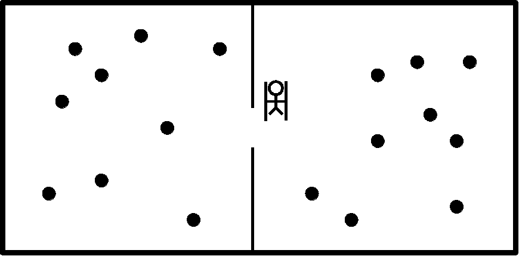
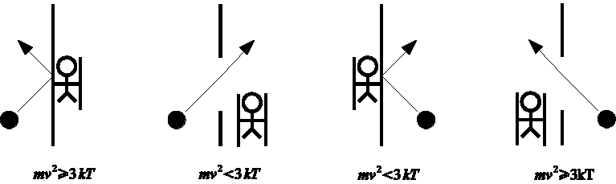
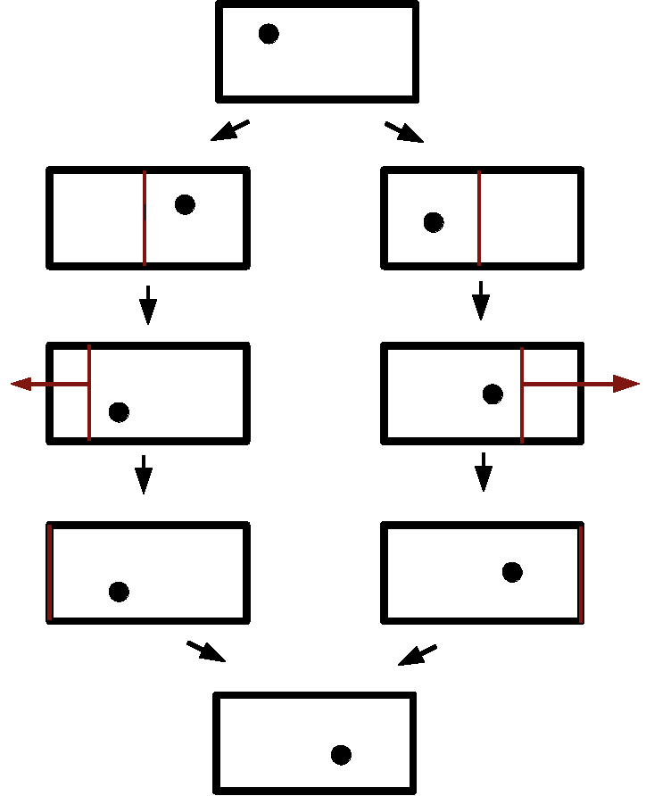
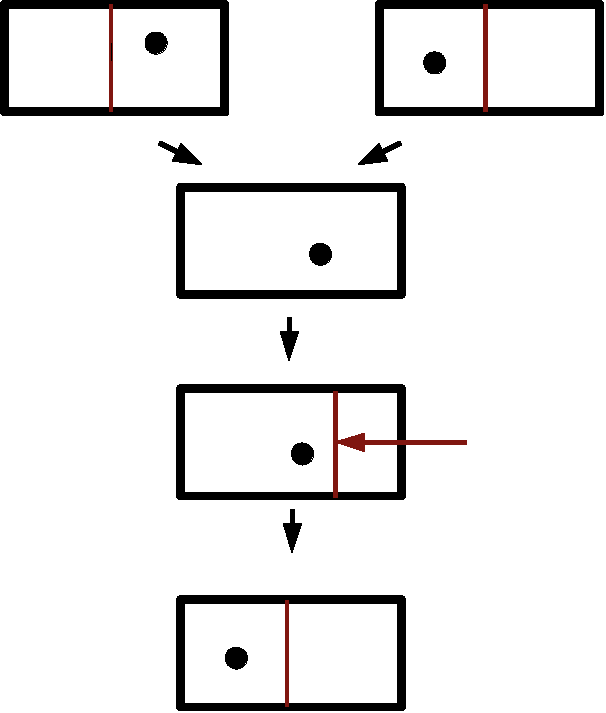
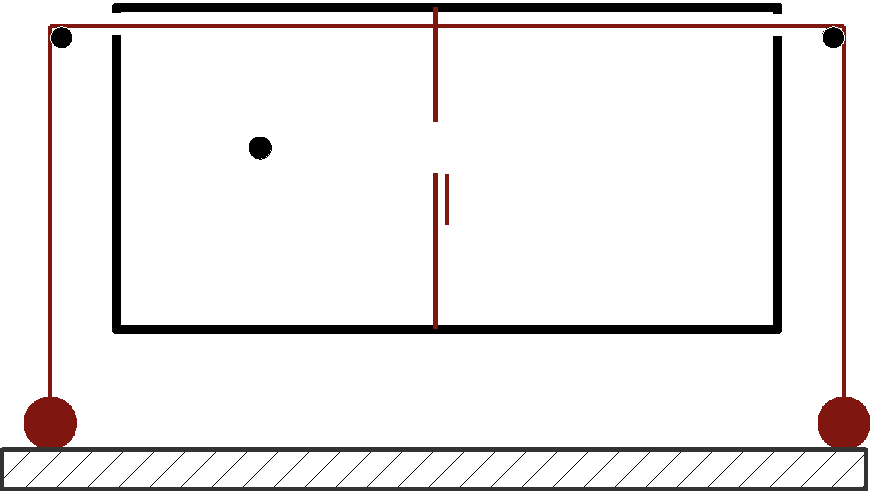
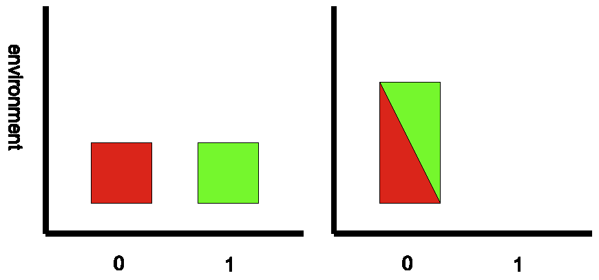

Information Processing and Thermodynamic Entropy
Are principles of information processing necessary to demonstrate the consistency of statistical mechanics? Does the physical implementation of a computational operation have a fundamental thermodynamic cost, purely by virtue of its logical properties? These two questions lie at the centre of a large body of literature concerned with the Szilard engine (a variant of the Maxwell's demon thought experiment), Landauer's principle (supposed to embody the fundamental principle of the thermodynamics of computation) and possible connections between the two. A variety of attempts to answer these questions have illustrated many open questions in the foundations of statistical mechanics.
- 1. Maxwell, Szilard and Landauer
- 2. Statistical Mechanics and the Second Law
- 3. Statistical Mechanics Requiring Information Processing
- 4. Information Processing Using Statistical Mechanics
- 5. The Role of Quantum Theory
- 6. Discussion
- Bibliography
- Academic Tools
- Other Internet Resources
- Related Entries
1. Maxwell, Szilard and Landauer
1.1 Maxwell's demon
Maxwell's demon was first mentioned in a letter written to Tait in 1867. Maxwell was one amongst a number of researchers in the developing field of thermodynamics who was interested in seeking an understanding of thermal phenomena in terms of an underlying atomic physics. However, unlike Boltzmann and Clausius, who were attempting to prove the law of entropy increase from such atomic physics, Maxwell had realised that if thermodynamics was ultimately grounded in atomic theory, then the second law of thermodynamics could have only a statistical validity.

The standard demon is supposed to be able to create a temperature difference in a gas, without expending work. The gas is in a container, divided in two by an insulated partition, but there is a hole in the partition just large enough for a single molecule to pass through. The gas has been allowed to equilibrate at some well defined temperature, and as a result the average kinetic energy of each molecule is (3/2)kT (we ignore internal degrees of freedom and assume the gas is monatomic), where T is the absolute (Kelvin) temperature scale and k is Boltzmann's constant.
The demon is equipped with a shutter that is able to block the hole. If a molecule that is moving faster than average approaches the hole from the left hand side, the demon closes the hole with the shutter, and the molecule is elastically reflected back to the left. If a molecule approaches from the left hand side, but moving slower than average, the demon leaves the hole unblocked, and the molecule proceeds through to the right. When a molecule approaches the hole from the right hand side, the demon's sorting procedure is reversed: slow molecules are blocked and fast molecules are allowed to pass through. The result is a gradual accumulation of faster molecules on the left and slower molecules on the right. Further collisions between molecules will distribute this kinetic energy throughout each side, resulting in the gas in the left side getting hotter and the right side getting cooler. As the collisions with the shutter are elastic, and moving the shutter is frictionless, no work is performed by the demon. The temperature difference that develops could be exploited by a conventional heat engine to extract work, in violation of second law of thermodynamics.

A simpler demon could be constructed simply by always blocking molecules coming from the left and never blocking molecules approaching from the right. This pressure demon would cause a pressure difference to develop between the two sides of the partition and again, a conventionally operating engine could exploit such a difference to extract work.
His thought experiment was intended to demonstrate the possibility of a gas evolving from a higher to a lower entropy state. The later time reversal and recurrence arguments of Loschmidt and Poincare similarly challenged the H-theorem of Boltzmann (see Uffink (2006), Section 4, for a discussion of these arguments), but time reversal requires great sensitivity and recurrence takes a very long time. Although they show the law of entropy increase is not absolute, we might still be surprised to actually witness a large decrease in entropy happen through these means. With the demon we to appear to need another explanation of why such systems are not seen to occur spontaneously in nature, or why we cannot arrange for such a decrease in entropy to occur.
Maxwell's original discussions emphasised that the demon needed to have powers of perception and handling the individual molecules far greater than our own. This makes its operation simply a matter of scale and the statistical nature of the second law not probabilistic, but due to our inability to discriminate the exact state of a large number of particles (similar to our inability to exploit Loschmidt's reversibility objection). This leaves open the possibility of a device which could discriminate fluctuations in individual atomic velocities and it is not clear that any probabilistic argument would prevent work being extracted from this. The explanation of Brownian motion by Einstein in 1905, as the effect of statistical mechanical fluctuations, made them appear directly observable and open to exploitation. Earman and Norton (1998) includes a historical review of early attempts to design such devices.
Smoluchowski (1914) is generally credited with having proposed the explanation that prevents their operation. He replaced the demon by a physical device, in this case a gentle spring that presses the trapdoor against the side of the partition. The combined spring and trapdoor is supposed to act as a valve. The trapdoor is held shut if a molecule collides from the left, but is opened by a fast collision from the right, so that a pressure difference develops. However, the spring is a system with its own kinetic and potential energy. The collisions will transfer energy to the spring, making it oscillate. When the internal energy of the spring matches the temperature of the gas, it is flapping back and forth, effectively randomly. It becomes as likely as not to be spontaneously open when a molecule arrives from the left and to be swinging shut when a molecule arrives from the right. This balance means pressure or temperature differences are no more likely to occur than they would spontaneously if the hole was simply left open. If the internal energy of the spring is out of equilibrium with the gas, it will be heated (or cooled) by the collisions with the molecules until equilibrium is reached.
The trapdoor may appear to violate the second law over short periods, but the behaviour is such that it is not violated in the long run. Smoluchowski suggested that a modified second law should express the inability of a device to produce continuous, reliable reductions in entropy.
1.2 Szilard's engine
Smoluchowski also left the possibility open of an exception even to a modified second law:
As far as we know today, there is no automatic, permanently effective perpetual motion machine, in spite of the molecular fluctuations, but such a device might, perhaps, function regularly if it were appropriately operated by intelligent beings.
Szilard (1929) attempted to investigate this special case of intelligently operated devices by considering a box containing only a single molecule. He argued that in order to achieve the entropy reduction, the intelligent being must acquire knowledge of which fluctuation occurs and so must perform a measurement. The second law would not be threatened provided there was a compensating cost to performing this measurement, regardless of the character of the intelligent being.

The Szilard engine consists of a box, containing a single molecule, in thermal contact with a heat bath, and a partition. Thermal contact transfers energy, through random fluctuations, back and forth between the molecule and the heat bath. The molecule bounces randomly throughout the box with this thermal energy.
The partition is capable of being inserted into the box, dividing it into two separate volumes, and is also capable of sliding, frictionlessly, along the box to the left or to the right. When the partition is inserted in the box, collisions with the molecule exert a pressure on the partition. If the partition moves in the direction of the pressure, it may be coupled to a pulley and the force used to lift a weight. If the partition moves against the pressure, this requires the coupled pulley to lower a weight, working against the pressure exerted by the molecule.
If the partition is inserted at the middle point, the molecule is caught on one side or the other with equal probability. Now if it is known which side the molecule is on, it is possible to connect up the partition to a pulley and extract work. Based upon the ideal gas law, PV=NkT, for the case where N=1, it is a standard calculation to show that the maximum work extracted as the partition moves to the side of the box is kT ln 2. As the molecule is assumed to be in thermal contact with the heat bath at all times, the kinetic energy of the molecule is maintained at (3/2)kT, and the work extracted is drawn from the heat bath. Once the partition reaches the side of the box, it can be removed and the cycle has been completed. Heat has been extracted from the heat bath and converted into work, with apparent certainty. The process may be repeated indefinitely to continue the certain extraction of work. If this succeeds, Smoluchowski's modified second law appears to be violated.
Szilard's analysis emphasised the necessity of knowing which side the molecule is on, for work to be extracted. Without this it would not be possible to know in which direction the partition needs to move. This connects the apparent second law violation to the state of a demon's knowledge. Szilard argued that the second law would be saved if the acquisition of knowledge by the demon came with a compensating entropy cost. Much of the succeeding literature is concerned with whether, and how, this knowledge comes with the cost that Szilard believed, or with whether such knowledge is, in fact, necessary for the engine's operation.
1.3 Landauer's principle
Landauer (1961) investigated the question of what are the physical limitations on building a device to implement a computation. At the time he wrote, an influential body of work had been developed, by Brillouin (1951, 1956), Gabor (1964) and Rothstein (1951), arguing that the acquisition of information through a measurement required a dissipation of at least kT ln 2 energy for each bit of information gathered. von Neumann (1949) had also suggested on the basis of Szilard's work, that every act of information processing was necessarily accompanied by this level of energy dissipation.
Starting by representing logical operations as abstract maps defined from one set of discrete logical states to another set, Landauer argued that a physical system that was designed to implement the logical operation must have physical states to correspond to the logical states. He then distinguished between logically reversible and logically irreversible operations: an operation is logically reversible if the input state can be uniquely identified from the output state.
The NOT operation, for example, is a logically reversible operation. If the output is logical state one, then the input must have been logical state zero, and vice versa. An example of a logically irreversible operation is the AND operation. If the output is logical state zero, then there are three possible combinations of input logical states that could have produced that output: (zero, zero); (zero, one); and (one, zero).
As logically reversible operations need to be 1:1 maps, Landauer argued they can be implemented by physical devices which do not compress the physical state space. Logically irreversible operations reduce the logical state space, so must compress the physical state space. Landauer argued that this must be accompanied by a corresponding entropy increase in the environment, in the form of heat dissipation. Most familiar logical operations are irreversible and so by this argument must generate heat.

To quantify the heat generation Landauer considered the most basic logically irreversible operation to be resetting a bit. This operation takes two input logical states, (conventionally zero and one) and always outputs logical state zero (in some papers reset to one is considered instead).
For a physical implementation of this operation, it is usual to consider a device similar to the Szilard engine. A box, in thermal contact with a heat bath, contains a single molecule and a partition which divides the box in two. If the molecule is on the left hand side, then the physical state represents logical state zero and if the molecule is on the right hand side, it represents logical state one.
The partition is then removed from the centre of the box, so the molecule is free to travel throughout the box. The partition is inserted into the far right hand side of the box and, maintaining thermal contact, is slowly moved to the centre of the box. Once again, collisions with the molecule exert a pressure on the partition, requiring work to be performed, and the energy from the work is transferred via the molecule to heat in the heat bath. Standard calculations show this requires at least kT ln 2 work. One expression of what has now become known as “Landauer's principle” is that there are no possible physical implementations of the resetting operation that can do better that this, that is, reset a bit to zero converting less than kT ln 2 of work into heat.
Landauer referred to this operation as resetting, although in much of the succeeding literature this has become known as erasure. This has caused some confusion as “erasing” information could be taken just to mean an operation which destroys the original information, without necessarily leaving the system determinately in the zero state. An example of such ‘erasure-by-destruction’ would be to simply remove the partition from the box, wait long enough for thermalisation to randomise the location of the molecule, then reinsert the partition in the centre of the box. Such an operation would clearly destroy the original information, represented by the original location of the molecule, but requires no work to be performed. However, it is also clearly not an implementation of the reset operation.
Landauer's argument suggests that, purely from the abstract properties of a logical operation one can deduce a thermodynamic constraint upon any physical system which is required to act as an embodiment of that logical operation. It suggests there is a non-trivial thermodynamics of computation, a non-trivial connection between abstract logical functions and their physical implementation in thermal systems.
Landauer did not, in his 1961 paper, directly address the question of whether a measurement was logically reversible or irreversible, but only questioned whether the concept of a measurement had been defined sufficiently well in the work of Brillouin and others. At that point in time, he regarded logical irreversibility as an essential part of computation and believed this was responsible for a necessary minimum heat generation in information processing. His arguments were presented as making more precise the arguments of Brillouin and von Neumann.
Bennett (1973) built upon Landauer's work, but argued that logical irreversibility could be avoided in computation in general. In (Bennett 1982) he argued that measurement could also be represented by a logically reversible process, avoiding any need to generate heat. This represented a major change from von Neumann and Brillouin's arguments, and Bennett's presentation of Landauer's principle rapidly became accepted as the fundamental principle of the thermodynamics of computation.
2. Statistical Mechanics and the Second Law
The literature devoted to analysing the second law of thermodynamics in the context of statistical mechanics starts with the development of statistical mechanics in the late 19th century. Considerable confusion has arisen simply due to the fact that as the subject has developed, the meaning of key terms have changed or become ambiguous. When one paper speaks of the second law being violated or of entropy decreasing and another of it being saved or being non-decreasing, it is not necessarily the case that they are referring to the same things. While a review of the foundations of thermal physics is beyond the scope of this entry (though see related entries by Sklar and Uffink), some important distinctions need be borne in mind.
2.1 Which entropy?
Even in phenomenological thermodynamics, the definition of thermodynamic entropy is difficult to make precise and may be approached in a number of ways (see (Uffink 2001) for an extensive treatment of this issue). The traditional approach is based upon the work of Carnot, Kelvin and Clausius, one version of which will be given here.
A closed thermodynamic system has contact with the rest of the world only through work and heat exchange. Work performed upon the system lowers a weight through a gravitational potential, while work extracted is used to raise the weight through the potential. This work may be performed through the manipulation of externally controllable parameters of the system (such as adjusting the volume of a sealed box containing a gas) or may be by other means (such as driving a paddle wheel within the gas, stirring the gas). Heat is exchanged with heat baths brought into thermal contact with the system. Many heat baths may be used, and they may be at different temperatures to each other. A closed cycle is a sequence of operations that leaves the system in the same thermodynamic state at the end of the sequence as it was at the start of the sequence, but may change the position of the weight in the gravitational potential, and may involve quantities of heat being deposited in, or extracted from, the individual heat baths.
It was empirically observed that in any closed cycle, whose sole result is the generation of heats, Qi, in heat baths at temperatures Ti, (requiring work W=∑i Qi to be performed), the Clausius inequality:
∑i
Qi Ti ≥ 0
holds. Both the Kelvin version of the second law of thermodynamics:
it is impossible to perform a cyclic process with no other result than that heat is extracted from a heat bath, and a weight is raised
and the Clausius version:
it is impossible to perform a cyclic process with no other result than that heat is extracted from a heat bath with a low temperature and deposited in a heat bath with a higher temperature
are special cases of this inequality. Kelvin and Clausius, building on the work of Carnot, suggested that the inequality must hold, for all closed cycles, as a general law. The temperature scale is the absolute temperature scale (up to a positive multiplicative constant rescaling: T′=aT, with a>0), which may be measured with an ideal gas thermometer.
Now let us suppose there exists a process that transforms the system from a thermodynamic state A to thermodynamic state B, while generating heats qi in heat baths at temperatures Ti, and an opposite process, from B to A, generates heats q′i, in the same heat baths, in such a way that the equality:
∑i
qi Ti + ∑i
q′i Ti = 0
is reached. It follows from the inequality that, if there is any process that transforms the system from state A to state B, while generating heats Qi in heat baths at temperatures Ti, then:
∑i
Qi Ti + ∑i
q′i Ti ≥ 0
and so:
∑i
Qi Ti ≥ ∑i
qi Ti .
The term
∑i
qi Ti
defines a minimum quantity associated with the heats generated by any possible process that transforms the system from state A to state B. Clausius had the insight that this could be used to define a function of the thermodynamic state, through the measurement of heat transferred to heat baths, as the system changes between two states. The function, the thermodynamic entropy SΘ, is defined by
SΘ(A) − SΘ(B) = ∑i
qi Ti
For any other process,
∑i
Qi Ti ≥ ∑i
qi Ti
so for any process to be possible:
∑i
Qi Ti ≥ SΘ(A) − SΘ(B)
An adiabatic process (one which does not generate any heat) from state A to state B is therefore only possible if it is entropy increasing: SΘ(A) ≤ SΘ(B).
This definition, of thermodynamic entropy, depends upon cyclic processes that can reach the equality, which are called reversible processes. The existence of such processes between thermodynamic states allows the entropy differences between those states to be determined and, by extension to all states, defines a thermodynamic entropy function that is globally unique (up to a rescaling S′ = a−1 S + b, where a and b are constants, and a is the multiplicative constant from the temperature scale). It may be noted that if there exist states that cannot be connected by a reversible process, it is still always possible to define an entropy function that satisfies
∑i
Qi Ti ≥ SΘ(A) − SΘ(B)
for all possible processes, but its value will not be determined uniquely (i.e., there will exist a number of functions that satisfy the inequality).
To reach the equality for a cycle generally requires quasistatic reversible processes. These are processes for which the system goes through infinitesimally small changes in the state variables (such as the temperature, the volume and the pressure of a gas) and for which the change can go in either direction with equal and opposite infinitesimal heat exchanges with heat baths. These heat exchanges are generally only reversible if the system is in thermal equilibrium with the heat bath.
For the changes in the state variables to be infinitesimal, the state space must be continuous. A sequence of states will then be represented by a continuous curve in the state space. The curve connecting A to B through these infinitesimal changes replaces the summation with an integral. The Ti can be replaced by the temperature of the system T, and the heat, dQ, is now the heat absorbed by the system, to give:
SΘ(B) − SΘ(A) = B
∫
A
dQ T
The Clausius inequality ensures that this value is the same for all quasistatic reversible paths from A to B. It should be noted that a quasistatic reversible path is an idealisation that is reachable only in the limit of infinitely slow processes.
This thermodynamic entropy is a consistently defined single valued function of the thermodynamic state only if the Clausius inequality holds. If a Maxwellian demon exists, however, then it would appear possible the Clausius inequality would not hold. To investigate further it is necessary to consider statistical mechanical generalisations of entropy.
For statistical mechanics we need to consider a microscopic state space and a dynamical evolution of states in that space. Classically this will be a phase space, with an N-body system having 3N position degrees of freedom and 3N momentum degrees of freedom. A single point in the phase space corresponds to the combined physical state of all the N bodies. The dynamics is almost always supposed to be Hamiltonian. A Hamiltonian flow preserves the measure dX3NdP3N. This measure can be used to define the volume, VR, of a region of phase space, R, as:
VR =
∫
Rdx3Ndp3N
A very important consequence of this is Liouville's Theorem, which shows that the volume of phase space occupied by a set of states does not change when that set of states evolves through a Hamiltonian evolution.
For quantum mechanical systems, the microscopic state space is a Hilbert space. Dynamic evolution is generally through a unitary operator, but with doubly stochastic transitions if wavefunction collapse occurs. Volumes of regions of the state space are associated with the dimensionality of the smallest subspace containing the region, and an analogue of Liouville's Theorem holds for unitary evolution (doubly stochastic transitions may increase, but cannot decrease, this state space volume). For the most part there is little difference between the classical and quantum treatments of Szilard's engine and Landauer's principle and, unless stated otherwise, we will use the classical treatment. We will consider some of the suggested differences in Section 5.
The Boltzmann entropy, SB = k lnW, is widely regarded as being the most natural analog within statistical mechanics for the thermodynamic entropy. It is a property of an individual microstate. The state space is divided up into a number of distinct regions and SB is defined in terms of the volume, W, of the region of state space to which the microstate belongs. All microstates within a given region have the same Boltzmann entropy.
There are many approaches to defining the division of the state space into distinct regions. The most common group together sets of microstates that match criteria such as being macroscopically or observationally indistinguishable or are accessible over time to the microstate evolution. For the systems considered here, these approaches generally define the same regions. We may conventionally refer to these regions as macrostates, while acknowledging this terminology is a little inappropriate when describing systems consisting only of a single molecule. In the case of the Szilard engine, for example, the macrostate of the system, when the partition is absent, consists of the set of all the microstates for which the molecule is in the box. When the partition is inserted in the box, the macrostate is the set of all the microstates for which the position of the molecule is on the same side of the partition as the actual location of the molecule. We will sometimes refer to the Boltzmann entropy of a macrostate: this is simply the Boltzmann entropy of the microstates within that macrostate.
The Boltzmann entropy, SB, is not guaranteed to be non-decreasing. While decreases of SB are known to be possible through the reversibility and recurrence objections to Boltzmann's H-theorem, such decreases would be seen as surprising if they occurred in practice. While an individual microstate can evolve from a high volume macrostate to a low volume macrostate, Liouville's Theorem guarantees that only a fraction of the microstates from the larger macrostate can end up in the smaller macrostate under a Hamiltonian evolution. From the logarithmic form of Boltzmann entropy the proportion, by volume, is p ≤ eΔSB/k (with ΔSB the reduction in the Boltzmann entropy between the two macrostates). If it can be assumed that the probability of the microstate being in a given subregion of the macrostate is proportional to the phase space volume of the subregion, this gives Einstein's fluctuation formula. Although widespread use is made of this assumption, its justification is one of the more significant challenges for the foundations of statistical mechanics.
By Liouville's Theorem, if all the microstates (up to a set of measure zero) in an initial macrostate evolve into the same final macrostate, then the Boltzmann entropy of the final macrostate cannot be less than the Boltzmann entropy of the initial macrostate. This is a macroscopically deterministic process. A macroscopically indeterministic process is one in which microstates starting in the same initial macrostate end up in different final macrostates. Penrose (1970, Chapters V, VI) analysed the problem of the change in Boltzmann entropies for these kinds of processes in detail. After attempting a justification of probabilities being proportional to phase space volume, he argued that even the average of the Boltzmann entropy can decrease for macroscopically indeterministic processes. For a system initially in a macrostate with Boltzmann entropy SB, and evolving, with probability pi, into a macrostate i with Boltzmann entropy SBi, it is possible that ∑i piSBi < SB (it is even possible that ∀i SBi < SB). However, Penrose also showed that this decrease is bounded: ∑i pi (SBi − k ln pi) ≥ SB. He suggested that, when there is a probability distribution over distinct macrostates, a modified, statistical entropy, SP = ∑i pi (SBi − k ln pi), should be used. This statistical entropy is non-decreasing even for macroscopically indeterministic processes.
The Gibbs approach to statistical mechanics is based upon probability distributions, p(X3N, P3N), over the state space, rather than the properties of individual microstates. The Gibbs entropy of the distribution is defined by SG = −k ∫ p(X3N, P3N) ln p(X3N, P3N) dX3NdP3N. If the state space is divided into a number of distinct macrostates, Ri, then the Gibbs entropy of the ith macrostate is
SGi = −k ∫Ri p(X3N, P3N | i) ln p(X3N, P3N | i) dX3NdP3N,
with p(X3N, P3N | i) = p(X3N, P3N, i) / pi and pi = ∫Ri p(X3N, P3N) dX3N dP3N. This gives SG = ∑i pi(SGi −k ln pi). (N.B. p(X3N, P3N, i) = 0 outside of Ri and p(X3N, P3N, i) = p(X3N, P3N) inside of Ri.)
It is a consequence of Liouville's Theorem that this entropy is constant under Hamiltonian flows. While this guarantees entropy is non-decreasing, it presents a problem for providing an account of the appearance of entropy increase. The standard approach to dealing with this is called coarse graining. Coarse graining replaces the probability distribution over each macrostate, p(X3N, P3N | i), with a ‘smoother’ probability distribution, p′(X3N, P3N | i), Typically the ‘uniform’ distribution:
p′(X3N, P3N | i) =
1 ∫Ri dX3N dP3N
inside Ri and p′(X3N, P3N | i) = 0 outside Ri. The coarse grained entropy for the macrostate now satisfies
S′Gi = −k ∫Ri p′(X3N, P3N | i) ln p′(X3N, P3N | i) dX3NdP3N ≥ SGi .
The entropy of the overall coarse grained probability distribution p′(X3N, P3N) = ∑i p′(X3N, P3N | i) pi is
S′G = −k ∫ p′(X3N, P3N) ln p′(X3N, P3N) dX3NdP3N = ∑i pi(S′Gi −k ln pi) ≥ SG.
Coarse graining the probability distribution avoids Liouville's Theorem, and successive coarse grainings increase the coarse grained Gibbs entropy. The justification for coarse graining is usually attributed to our observations being insensitive to the fine grained structure of the original probability distribution p(X3N, P3N | i). The acceptability of this practice is one of the major problems for the Gibbs approach to statistical mechanics.
For Szilard's engine and Landauer's principle, it is largely agreed that numerical evaluations allow us to set SBi = SGi = S′Gi for all macrostates, by the adjustment of a single additive constant (this is equivalent to saying that entropy differences between macrostates are the same for each definition of entropy). Where there is no uncertainty over the macroscopic state, it can also be assumed SB = SP = SG = S′G. This has allowed a large amount of discussion to take place in the literature referring to ‘entropy’, without specifying which entropy is meant. Although this practice can cause confusion, it avoids unnecessarily cumbersome language in situations where the different entropies are in agreement. However, when an argument is only valid for a particular entropy, or when these entropies disagree, it should be clearly stated which entropy is involved.
2.2 Which second law?
Atomic physics allows the possibility of evolutions to states that would usually be characterised as having a lower thermodynamic entropy. An exorcism of Maxwell's demon, therefore, cannot be taken to be the claim that this entropy cannot go down, as this is definitely possible. Smoluchowski proposed, not an outright exorcism of Maxwell's demon, but an argument that Maxwell's demon could not violate a modified second law. He offered a modified formulation of the second law which states the demon is unable to reliably, continuously produce work. Such a demon, while not exorcised, might be considered “tamed”. A tame demon could produce (in the terminology of Earman and Norton (1998)) “straight” violations of the second law, but not “embellished” violations, where the straight violation is exploited in such a way as to reliably, continuously produce such work.
Such a formulation leaves much to be clarified: reliability is not clearly defined and the requirement that the demon only fail in the infinite time limit seems to allow arbitrarily large violations on any finite time scale we might care about, with probabilities as close to one as we please, provided they do not actually reach one. A common reworking of the modified form, but which is clearly stronger, is that the demon cannot operate a cycle, in finite time, in which the expectation value for work produced is positive, as repetition of such a cycle could produce arbitrarily large amounts of work with probability arbitrarily close to one.
Not only are these formulations inequivalent, they leave open the possibility of other types of violation. Is there a demon which continuously, reliably produces work without ever completing a cycle or perhaps a demon which produces arbitrarily large amounts of work and completes a cycle with a probability arbitrarily close to one, but which still does not succeed on average as it faces a catastrophically large failure on the remote possibility that it fails? Whether a cycle needs to complete with certainty, or just with probability arbitrarily close to one, whether a completed cycle means the system must return to exactly its initial state or whether it need only return to an equivalent state, would seem to require clarification as part of such a modified law.
Formulations of modified second laws in terms of entropy must first identify the entropy function being used. Here the problem is not so much to define a modified law. One may easily define ones that are already known to be true (the fine grained Gibbs entropy cannot decrease) or false (the Boltzmann entropy cannot decrease, or cannot decrease on average). The challenge must be to show that a given modified law is, in fact, the law one should really be concerned about. Its violation would show that untamed demons clearly exist, while its proof would ensure that all demons are tamed.
In this entry a constrained violation is one in which the unmodified second law is violated, but with some constraint upon the form of the violation so that some form of modified second law may still be possible. An unconstrained violation is one in which all attempts to construct meaningful modifications of the second law are also invalidated. Although this is still ambiguous, there seems general agreement that a cycle which could complete in finite time and with probability one, and have no other effect than to convert a quantity of heat into work, would certainly constitute an unconstrained violation.
3. Statistical Mechanics Requiring Information Processing
Szilard's own answer to the dilemma posed by his engine was to presume that a demon could not operate the device continuously and reliably. He then tried to deduce where it must go wrong. He imposed the postulate that the second law must be obeyed and after eliminating all other sources of entropy production, he argued that a minimum entropy production occurs during measurement. The postulated second law is a modified one, requiring that the average entropy production in a measurement process must equal the average entropy reduction as a result of that measurement. Although Szilard did not identify a specific definition of entropy, it is clear from the context that he was considering the entropy of specific macrostates. The most significant aspect of Szilard's argument is, in effect, that if statistical mechanics is incompatible with the operation of untamed demons, then it is required that there be an entropic cost associated with the demon's acquisition of information.
3.1 Measurement with light
While Szilard gave a specific example of a measurement process that was supposed to demonstrate the entropic cost, he did not attempt a general argument that no physical measurement process could do better. Instead the argument went that if one did exist, it would lead to an untamed demon. In light of later arguments, it should also be pointed out that it is not, in fact, measurement but the erasure of the measurement outcome that generates the entropy production in Szilard's example.
Szilard's argument was developed further after Shannon identified that the measure p ln p had operational significance for information theory, suggestive of a deeper connection between entropy and information. To illustrate the idea further, both Gabor (1964) and Brillouin (1951) constructed specific models of dissipative measurement that involve shining a light into one side of the engine to see whether that side contains the molecule. The light is scattered if the molecule is on that side, but is not scattered if the molecule is not present. However, if the system, including the electromagnetic field itself, is in thermal equilibrium then there is background radiation at that temperature with a blackbody spectrum. To see the scattered light it must be distinguishable from the background radiation. This requires a photon with energy much higher than the mean energy of the blackbody spectrum, so ℏ ν ≫ k T. A photon must be used whose energy is greater than the energy gained from the operation of the engine, thereby precluding a net conversion of heat into work.
Brillouin, in particular, attempted to develop this idea into a general theory of the relationship between information and entropy. Brillouin now identified entropy with the Gibbs entropy of a system. He distinguished two kinds of information: ‘bound’ information and ‘free’ information. Bound information refers strictly to information which is embodied in the states of physical systems. Information which is, for example, only contained in someone's mind, according to Brillouin, is free, not bound. Performing a measurement could reduce the thermodynamic entropy of a system, but to do so requires the creation of an equivalent quantity of bound information in the device which holds the outcome of the measurement. However, it is not entirely clear if Brillouin's argument was that the creation of bound information is necessarily associated with compensating entropy production, as the arguments based upon scattered photons suggest, or if the bound information in itself is an additional term that must be added to normal entropy to produce a generalised second law.
3.2 Engines without demons
A counter-argument to Szilard was developed originally by Popper, although it first appears in print with Feyerabend (1966) and has been rediscovered repeatedly. Its goal is to reject the idea that statistical mechanical entropy is a subjective quantity. The primary purpose of the counter-argument is to show that work can be extracted without needing to have an intelligent being involved. The concept of information is argued not to carry any real burden in understanding the Szilard engine. The measurement can be performed, and the operation of the engine effected, without there needing to be a demon to find out the result of the measurement. The description of the measurement outcome as information is superfluous.

The Popper-Szilard engine attaches a pulley and weight to each side of the partition, but positions a floor beneath the engine in such a way that when the partition is in the centre of the box, both weights are resting on the floor and the pulley is taut. The partition has a hole in it, allowing the molecule access to both sides of the engine. At an arbitrary time, the hole is blocked, without any measurement performed on the location of the molecule. The collisions of the molecule against the partition will now exert a force on one or the other weight, lifting it against gravity.
What is frequently left unclear in discussions of these devices is whether a compensating entropy increase must still take place and if not, what implications this has. To some, most notably Feyerabend, no compensation need occur and the argument is continued to claim explicitly the second law of thermodynamics is unconditionally violated. To others, such as Popper, it indicates that the second law of thermodynamics is only applicable to large systems with many degrees of freedom. The engine is used to demonstrate the domain of validity of thermodynamics, in a similar manner to Maxwell's original demon. From this point of view, the Smoluchowski trapdoor may still be viewed as a thermodynamic system but the Szilard engine is not. Advances in technology, such as in nano-technology and quantum computation, may render this argument problematical, as the ability to construct reliable devices manipulating the states of individual molecules will, if there is not some additional physical constraint, eventually allow the construction of macroscopically large numbers of such devices. If each device could reliably, continuously extract even microscopic amounts of heat, then in aggregate there would again be the production of macroscopically significant quantities of work.
3.3 Memory and erasure
Landauer's work led indirectly to criticisms of the Szilard argument although Landauer did not directly address the Szilard engine, or Maxwell's demon. According to his own comments in (Landauer 1986), it appears he believed that logically irreversible operations were a necessary part of a computation and these generated heat. Although it was known to be possible to simulate logically irreversible operations with logically reversible ones, this came with its own cost of additional bits of information needing to be stored. To avoid this storage, and to complete a thermodynamic cycle, required the additional bits to be reset to zero, with a corresponding entropy cost.
A similar argument was developed from first principles by Penrose (1970, Chapters V and VI, with particular reference to VI.3), who had deduced that the Boltzmann entropy could go down on average, but only during macroscopically indeterministic processes. This reduction was bounded, such that, if a macroscopically indeterministic process started in a determinate macrostate of Boltzmann entropy S0, and produced distinct macrostates of Boltzmann entropy Si, with probability pi, then S0 − ⟨ Si ⟩ ≤ −k ⟨ ln pi ⟩. He further argued this meant that a process which started with distinct macrostates of Boltzmann entropy Si, each occurring with probability pi, could not end up in a macrostate with Boltzmann entropy Sf with certainty, unless Sf − ⟨ Si ⟩ ≥ −k ⟨ ln pi ⟩ as, otherwise, the two processes in succession could lead to a macroscopically deterministic process with decreasing Boltzmann entropy (Sf <S0).
Penrose then directly applied this to the problem of the Szilard engine. The insertion of the partition corresponds to a macroscopically indeterministic process. After the insertion the molecule is in one of two possible macrostates, in either case reducing the Boltzmann entropy by k ln 2. However, this reduction cannot be directly exploited to extract k T ln 2 heat and leave the molecule in a macrostate occupying the entire box again. If there was a process which could directly exploit this reduction, it could combine with the insertion of the partition to be a macroscopically deterministic process that reduces the Boltzmann entropy (via the extraction of heat from the heat bath). Penrose had already argued, from first principles, that a macroscopically deterministic process cannot reduce the Boltzmann entropy.
He then considered adding a demon, and applied the same argument to the combined system of engine and demon. Now he concluded work can be extracted leaving the molecule in a macrostate occupying the entire box, but only by leaving the demon indeterministically in one of a number of macrostates. The additional statistical entropy of the probability distribution over the demon's macrostates compensates for the entropy reduction in the heat bath. Eliminating the statistical distribution over the demon's states is possible only with the cost of an entropy increase in the heat bath.
Penrose concluded that the demon needs to measure the location of the molecule, store that location in its memory, and can then extract the work. At the end of the operation, the demon retains the memory of where the molecule was located, maintaining the indeterministic outcome. He considered a demon repeating this process many times, gradually filling its memory up with the outcomes of previous measurements. If the demon's memory is finite, eventually it will run out of space, leading to one of two possibilities: either the demon ceases to be able to operate or the demon must reset some of its memory back to zero, which requires a corresponding increase in Boltzmann entropy elsewhere.
Penrose's solution was effectively rediscovered independently by Bennett (1982), after Bennett had demonstrated that logically reversible computation could avoid the necessity of storing large quantities of additional information (Bennett 1973). Bennett presented an explicit physical model for reversible measurement. In logical terms, he represented a measurement by the state of a measuring system becoming correlated to the state of the measured system. The measuring system starts in a fixed state (which can be taken to be logical state zero) and moves through a correlated interaction, into a copy of the logical state, zero or one, of the system being measured. For (measuring system, measured system), a combined input logical state of (zero, zero) is left unaffected with the output logical state (zero, zero), while a combined input logical state of (zero, one) becomes the output logical state (one, one). As the combined output state can be used to uniquely identify the combined input state, the operation is logically reversible.
For the physical process, Bennett made the molecule in the Szilard engine diamagnetic and the measuring device a one domain ferromagnet with a fixed initial polarisation. With careful manipulation, he argued it is possible to use the perturbation of the magnetic field by the diamagnet, to correlate the polarisation of the ferromagnet non-dissipatively to the diamagnet's location on one side or other of the engine. By the same kind of manipulation, he argued that to reset the polarisation of the ferromagnet to its initial state without using the correlated location of the diamagnet, there is a cost of k T ln 2 in heat generation, in accordance with Landauer's principle. Extracting work from the Szilard engine allows the diamagnetic molecule to move freely throughout the engine, so losing the correlation. The heat generating reset operation is then the only way to restore the ferromagnet to its initial polarisation.
With the ferromagnet representing the demon's memory, Bennett had given an explicit counter-example to the arguments of Szilard and Brillouin, that measurement is necessarily dissipative. At the same time he argued that the process of resetting the demon's memory is a necessarily logically irreversible step, which incurs the heat generation cost identified by Landauer, and this cost saves a modified form of the second law. Although Bennett gave a particular model for resetting the demons memory, no direct proof was given that there can be no better way. Unlike Penrose's argument, Landauer's principle seems to be assumed, rather than derived.
Supporters of this resolution argue that the demonless engines of Popper et. al. are also examples of this kind of process. In each case of a demonless engine, there is another mechanism that is left in one of two distinct possible states after the work is extracted, depending upon which side of the box the molecule was located. In the case of the Popper-Szilard engine, the partition is on the left or right hand side and a different weight has been lifted. This state still encodes the information about which outcome occurs. To truly have completed a cycle, reliably, it is necessary to restore the partition to the centre of the box, regardless of the side to which it moved, and to have a definite, single weight raised. If Landauer's principle is correct, this is a resetting operation and necessarily incurs a cost that, on average, offsets the work extracted from the operation of the engine.
3.4 Algorithmic complexity
The Landauer-Penrose-Bennett resolution depends for its consistency in continuing to take into account a probability distribution over the possible outcomes of the measurement, after the measurement has occurred. There are many reasons why one might feel that this raises problems. For example, a Boltzmannian approach to statistical mechanics takes the entropy of a system to depend only upon a confined region of the microstate space, usually either that of microstates compatible with a given macrostate, or accessible to the microstate over time. Probability distributions over inaccessible or macroscopically distinct regions should not, from this point of view, have thermodynamic significance. From an opposite point of view, a subjective Bayesian might argue probability distributions are only expressions of an agent's uncertainty. If the intelligent demon is supposed to be the agent, it can hardly be uncertain of its own state once it has performed the measurement.
Zurek (1989a; 1989b) proposed a development of the Landauer-Penrose-Bennett position, building on a suggestion of Bennett's, that would attempt to address some of these concerns and also whether a sufficiently cleverly programmed computer might be able to do better than Landauer's principle would suggest. If a demon performed a large number of cycles without erasing its memory, as Penrose suggested, then its memory would contain a randomly generated bit string. Zurek's suggestion was that the Boltzmannian entropy of the physical states representing the bit string needed to have added to it the algorithmic complexity of the bit string itself and it is this total entropy that is the subject of a modified second law.
The algorithmic complexity of a bit string is a measure of how much a given bit string can be compressed by a computer. A long, but algorithmically simple, bit string can be compressed into a much shorter bit string. This shorter bit string could apparently be reset to zero, by resetting each individual bit, for a much lower cost than resetting each individual bit in the original longer bit string. A clever demon might, therefore, be able to compress its memory and so avoid the full erasure cost that would be needed to ensure a modified second law holds.
However, long randomly generated bit strings are, with high probability, incompressible, so unless the demon was very lucky, this could not work. Furthermore, the average algorithmic complexity of a statistical mixture of bit strings is not less than the Shannon information of the statistical distribution. It can be shown, therefore, that even if the best compression algorithms are available the clever demon cannot do better, on average, than simply resetting each bit individually in its memory.
Zurek's proposed total entropy, given by the sum of the Boltzmannian entropy and the algorithmic complexity, is a property of the individual microstates, rather than of the probability distribution over the outcomes. It can decrease during macroscopically indeterministic processes, if a particularly algorithmically simple sequence of outcomes happens to occur. However, unlike the Boltzmann entropy, even during macroscopically indeterministic processes it does not decrease on average.
3.5 Sound vs. profound dilemma
Earman and Norton (1999) presented a dilemma for all attempts to exorcise the Szilard engine by information theoretic arguments. Would be exorcists who want to use information theory to save the second law must, they urge, choose between “sound” and “profound” horns of a dilemma.
The sound horn proposes a resolution in which the demon, as well as the system, are assumed to be ‘canonical thermal systems' and so subject to, a possibly modified form of, the second law. By imposing some form of the second law, consideration of what information processing a demon may need to undertake would lead to a conclusion as to what the thermodynamic cost of that information processing must be. This approach lead Szilard to conclude that information acquisition had an intrinsic thermodynamic cost. It is possible to read some papers on the use of Landauer's principle in the Szilard engine in a similar way: the justification for believing that the resetting operation must carry a thermodynamic cost is for, otherwise, even a modified second law would be false.
This kind of eliminative argument has significant weaknesses. All possible sources of entropy increase are eliminated and it is concluded whatever is left must be responsible for any remaining entropy increase. It is hard to see how it can be considered an explanation of why demons do not exist, as by imposing the second law in the first place, one has simply ruled out their possible existence. At most it can provide a demonstration of the consistency of assuming some particular operation has a thermodynamic cost attached to it. It is also hard to see what confidence one can have in the conclusions of such an argument. Szilard, Gabor and Brillouin thought that such arguments led to the conclusion that information acquisition had an intrinsic cost. By contrast, Landauer, Penrose and Bennett concluded that information acquisition does not have an intrinsic cost, but information erasure does. What are the grounds for supposing Landauer's principle is any more secure than Szilard's argument?
A sound resolution proceeds by assuming a second law to be true, and deducing the consequences for information processing. The other horn of the dilemma, a profound resolution, introduces Landauer's principle (or some other information theoretic principle) as an independent axiom, that cannot be derived within statistical mechanics. By adding this additional axiom, a modified second law may be derived, and the absence of untamed demons deduced. This in itself raises questions. It would suggest that statistical mechanics is incomplete without being supplemented with this new principle of information processing. If Landauer's principle is genuinely the reason the Szilard engine fails, a profound resolution implies that without it, statistical mechanics would allow unconstrained violations of the second law. Again, if we have no other independent grounds for believing in Landauer's principle, then how can we be confident that a clever device cannot be constructed to produce such an unconstrained violation?
3.6 Demons exist
There is, of course, another response to the Szilard engine, and Maxwell's demon in general. It is to argue that these demons do, in fact, exist. This has been suggested in recent years by Albert (2000) and developed by Hemmo and Shenker (2007). The principal argument depends on the observation that, in macroscopically indeterministic processes, the Boltzmann entropy can go down. Adopting a Boltzmannian point of view, Albert argued that the Boltzmannian entropy of the macrostate that the system inhabits is the only meaningful measure of thermodynamic entropy. The fact that in indeterministic processes it can be made to go down systematically is therefore just a fact of the world. In the Szilard engine, inserting the partition in the centre of the box is just such an indeterministic process that reduces the Boltzmann entropy regardless of which side the molecule is located. As the demonless engines show, extracting the work from this reduction is possible, without the intervention of intelligence.
Hemmo and Shenker considered whether this work extraction requires a record to remain of the initial location of the molecule, as supporters of the Landauer-Penrose-Bennett resolution would suggest. They argue that this is not necessary. Instead they perform an operation equivalent to ‘erasure-by-destruction’, on the auxiliary system. This destroys any remaining macroscopic trace of the information about where the molecule was located, without incurring any thermodynamic cost (see also Maroney (2005), who considered similar processes from within a Gibbsian framework), but leaves the auxiliary in one of several low Boltzmann entropy macrostates.
However, it seems also clearly acknowledged in these arguments that the reduction can only be achieved through macroscopically indeterministic processes. The system and auxiliary cannot both be restored to their initial macrostate with certainty, without heat being generated. It would appear that the violation is still constrained and the demon may be tame. Albert, at least, appeared to acknowledge this, and the corresponding possibility that a modified second law may still be possible.
Finally, it may be noted that it is possible to conceive of untamed Maxwell's demons, that produce unconstrained violations of the second law, by simply modifying the microscopic laws in order to make it so. Zhang and Zhang (1992) provided an example of this replacing the partition in the centre of Maxwell's box with a velocity dependant potential capable of creating a pressure difference in the gas. This potential is non-Hamiltonian, so Liouville's Theorem does not hold. The phase volume of the macrostate of the gas can then be compressed and both the Boltzmann and Gibbs entropies can be systematically reduced even in macroscopically deterministic processes. Such examples, while not necessarily being presented as candidates for demons that can be constructed in the real world, are nevertheless useful in clarifying what attendant assumptions are being made when exorcisms are proposed.
4. Information Processing Using Statistical Mechanics
In his earliest paper, Landauer derived the cost of performing the reset operation by simply assuming that there is an equivalence between the Shannon information of a distribution of logical states, and thermodynamic entropy of a physical system that can represent those logical states. A reduction in the Shannon information content of the logical states would then reduce the thermodynamic entropy of the physical system. Landauer then further assumed that the second law holds true and that this reduction must produce a thermodynamic entropy increase elsewhere. Viewed in this way, his argument appears to contain elements both of the profound and the sound horns of Earman and Norton's (1998, 1999) dilemma. It follows the profound horn in identifying Shannon information with thermodynamic entropy and the sound horn in assuming the validity of the second law.
It is less clear that Landauer himself thought he was introducing a new principle. It seems more plausible that he was taking for granted the Gibbsian approach to statistical mechanics, which identified p ln p as the statistical mechanical entropy long before Shannon's work, and the non-decrease of this entropy through coarse-graining. As such, the validity of Landauer's principle would still require the structure of Gibbsian statistical mechanics to be self-consistent and the appropriate representation of thermal systems. At the very least this cannot be taken for granted unless it has already been established that untamed demons do not exist and so the unquestioned use of Landauer's principle in exorcisms of the demon would still appear to be circular.
Nevertheless, this cannot be taken to imply that analysing the thermodynamics of computation is an altogether pointless task. The question of whether or not one can deduce thermodynamic consequences of physically implementing logical operations, from the structure of the logical operation itself, may be a well-founded question (although it clearly cannot be wholly divorced from what fundamental physics says about the construction of such devices). Furthermore, were it to be shown that Landauer's principle was not correct, and that information could be reset at arbitrarily low cost, it would seem that either untamed demons must be possible or some further source of heat generation must be discovered in the operation of Szilard's engine.
At one extreme, von Neumann argued that any logical operation necessarily generated a minimum quantity of heat. Gabor and Brillouin had argued that measurement, at least, generated heat. Landauer and Bennett argued that only logically irreversible operations need generate heat, but that measurement is logically reversible. This was backed up by the presentation of physical processes that could, in principle, perform a measurement with arbitrarily little heat generation. Bennett argued that while the measurement processes discussed by Gabor and Brillouin, using scattered light, generate heat, they were incorrect to generalise this to the claim that all measurement process must necessarily do the same. However, a similar charge may be levelled at Landauer's principle. Although explicit models for resetting operations have been constructed that get arbitrarily close to a minimum heat generation of k T ln 2, what is needed is a proof that no physical process can do better. A literature now exists examining the strength of this claim, and in particular what are the physical and statistical assumptions underpinning their arguments.
4.1 Liouvillean proofs
Schematically, the simplest of arguments in favour of Landauer's principle is based directly on volume of phase space arguments and Liouville's Theorem.

The microscopic state space of the system and environment is assumed to be divided into logical, or information bearing, degrees of freedom and environmental, or non-information bearing degrees of freedom. These can be simplified to just two dimensions. In the figure, the horizontal axis represents the information bearing degrees of freedom. The system being in logical state zero or logical state one corresponds to the microscopic state lying within a particular region of the information bearing degree of freedom. The reset to zero operation is required to be a Hamiltonian evolution of the state space of the system and environment that leaves the system in logical state zero, regardless of the initial logical state.
As the region of the state space available to the logical degrees of freedom is reduced by a factor of two, Liouville's Theorem requires that the region of state space available to the environmental degrees of freedom must have doubled. It is then argued that this must involve heat generation in the environment. This last step requires a little justification. In the Boltzmannian approach, the temperature of a macrostate is generally defined by the formula
∂SB V = 1 . ∂E T
If this system is very large, it is assumed that its temperature undergoes negligible changes from the absorption of small quantities of heat. It follows that if the physical volume is kept fixed, so that the only change in energy is through heating, then the heat and entropy are related by ΔQ = T ΔSB. Systems that satisfy these conditions may be considered to be good heat baths. A doubling in phase volume of the heat bath implies an increase in Boltzmann entropy of k ln 2, so requires heat absorption of kT ln 2.
Although this simple argument seems compelling, doubts may easily be raised. The representation of the logical states and the environment is so simplified that it should at least raise concerns as to what may have been lost in this simplification. Shenker (2000) and Hemmo and Shenker (2007) raise a number of such issues, as part of their arguments over the existence of a demon. There seems no reason to require the environment to absorb heat, or even be in a macrostate which has twice the phase volume. Instead, it could be in one of two distinct regions, corresponding to macroscopically distinct, but otherwise quite unimportant, degrees of freedom (such as the location of a shoe dropped on the floor). All that is required is that the environmental degrees of freedom must end in one of a number of distinct macrostates, whose total phase volume over all possible macrostates must be twice that of the its original macrostate. The use of an ‘erasure by destruction’ operation can then ensure that the specific macrostates have no trace of the original information.
However, as noted above in Section 3.6, Hemmo and Shenker acknowledge that some tighter formulations of Landauer's principle exist that prevent this kind of move (although they question the reasonableness of these formulations): if one requires that the resetting operation leaves unchanged the macrostate of any environmental degree of freedom that is not a heat bath, then the Liouvillean argument seems to hold.
4.2 Gibbsian proofs
The earliest attempts to construct general, rigorous proofs of Landauer's principle, from within statistical mechanics, were by Shizume (1995) and Piechocinska (2000). (Although Penrose (1970, Chapter VI) does, in effect, derive an entropic cost for the reset operation, it appears his work was motivated quite independently of Landauer's). Shizume's proof relies upon treating thermal contact as a Gaussian white noise field in a Langevin equation, while Piechocinska assumes Hamiltonian dynamics and a heat bath that is initially uncorrelated with the system and represented by a Gibbs canonical distribution.
These proofs, and those that follow on from them, are in the tradition of making standard assumptions that are generally accepted within the context of practical calculations in statistical mechanics. It is taken for granted that a probability distribution over at least some region of state space is a meaningful characterisation of the state of a system, and further constraints are usually assumed about what kind of probability distribution this could be. From the point of view of investigating questions about the fundamental consistency of statistical mechanics, this may appear unsatisfactory. If the aim is more modest, of simply investigating the generality of the circumstances under which Landauer's principle might hold, such proofs may still be seen to be of value. It is important to distinguish between, for example, the rather hard problem of providing an explanation of why thermalised systems should be represented by a canonical distribution over the accessible states space, from the somewhat more easy task of deriving the consequences of the empirically justified observation that thermalised systems are well represented by a canonical distribution over the accessible state space.
Piechocinska provided proofs for both the classical and quantum cases. A brief sketch of Piechocinska's quantum proof is possible. First simply define a function Γ(i, f, m, n)= ln pi − ln pf − β(En − Em), where pi is the occupation probability of an initial state i of the system, pf the occupation probability of a final state f, beta the dispersion parameter of the canonical distribution of the heat bath, and Em and En the energies of eigenstates of the heat bath. No particular physical significance is attached to this function. However, from the requirement that the overall evolution be unitary, it can be shown ⟨ e−Γ ⟩=1 and so by convexity ⟨ Γ ⟩ ≥ 0. The mean heat generated in the heat bath can then easily be shown to satisfy ⟨ Q ⟩ ≥ −ΔH k T ln 2 where ΔH = ∑ i pi log pi − ∑ f pf log pf is the change in Shannon information over the states of the system during the operation. If there are assumed to be two equiprobable input states, the requirement that the operation be a resetting operation and leave the system determinately in a specific output state leads to ΔH = −1 and the usual expression of Landauer's principle is obtained.
This considers only pure quantum states to represent logical states, although in the classical case her proof allows logical states to be represented by macrostates. Maroney (2009) generalised the method further, to input and output states represented by macrostates with variable mean internal energies, entropies and temperatures and considered the consequences for more general logical operations than the reset operation. Turgut (2009), building on Penrose's work, derived similar—though apparently more powerful—results using the Gibbs microcanonical distribution approach.
4.3 Phenomenological proofs
Groisman, Ladyman, Short and Presnell (2007) presented a phenomenological argument in favour of the proposition that all logically irreversible operations are thermodynamically irreversible. In this they were responding in part to Norton's (2005) criticism of the generality of previous proofs of Landauer's principle (including Piechocinska's) and in part to Maroney's (2005) argument that the equality in Piechocinska's proof is reachable, and when reached the heat is generated in a thermodynamically reversible fashion.
Their intention seems to have been to have a general proof that can be shown to hold independently of any particular model of physical process of resetting. To achieve this without presuming something about the physics which governs a device that performs the resetting, they explicitly accepted the sound approach to Earman and Norton's Sound vs. Profound dilemma. This means they assumed that a particular modified form of the second law of thermodynamics must hold true. The modified version that they adopted is that there are no cyclic processes, whose sole result is to restore a system to its initial state and having a strictly positive expectation value for the conversion of heat into work.
Their method was, in essence, equivalent to that of Szilard and Bennett. They considered the operation of the Szilard engine, using a device to measure and store the location of the molecule, and a correlated operation to extract heat from it. Then they reset the device. Unlike Bennett, they did not assume that resetting has a cost, and argue that this cost saves the second law. Rather, like Szilard, they imposed a modified form of the second law, and from it deduced that resetting has a cost. The generality of their claim is based upon the fact that they made no attempt to characterise the device physically, although they did assume it was capable of performing non-dissipative measurements.
4.4 Counter arguments and examples
Early criticisms of Landauer's principle tended to focus on the claim that logically reversible operations could be implemented in a thermodynamically reversible fashion, and instead to defend the position of von Neumann, Gabor and Brillouin (see the references in Landauer's response (Porod 1988) and in (Bennett 2003) for examples of this debate). The increasingly explicit models developed by workers such as Bennett, Fredkin and Toffoli have now generally been considered to have established that thermodynamically reversible computation is indeed possible, if implemented by logically reversible computers.
Recent criticisms (Shenker 2000 [in Other Internet Resources], Norton 2005) focussed upon whether heat generation must necessarily be associated with logically irreversible operations. A particular objection raised by Shenker and a similar objection by Norton, concerned the use of probability distributions over macroscopically distinct states. Both Shenker and Norton argued that the thermodynamic entropy of a system is only properly defined by considering the region of state space accessible to the given microstate. For physical representations of logical states it is essential that the physical system cannot jump from one logical state to another. Consequently, regions of state space corresponding to different logical states are not accessible to one another, or as Shenker referred to it, they are not interaccessible. In Landauer's original paper, he simply identified the p ln p term of the probability distribution over the distinct logical states with thermodynamic entropy. More developed Gibbsian approaches still calculate the Gibbs entropy of a statistical distribution over regions of state space which are not interaccessible. Norton argued in detail that this is an illegitimate calculation, and that the resulting entropy has nothing to do with thermodynamic entropy.
The objection extends far beyond the scope of Landauer's principle. It shares much with general Boltzmannian arguments against the Gibbs approach to statistical mechanics. However, it is questionable whether proofs following the approach of Piechocinska are genuinely vulnerable to the accusation. Piechocinska did not, in fact, attribute a thermodynamic entropy to the Gibbs entropy measure (entropy was barely even mentioned in her paper) nor, contrary to some criticisms, did she assume a specific model of how the reset operation is performed, at least in the quantum case. The assumption that generates the logarithmic form of Landauer's principle is that heat baths are initially canonically distributed (an assumption which Norton, at least, appeared willing to concede) combined with the requirement that a single Hamiltonian (or unitary, in the case of quantum theory) dynamics is used to describe the combined evolution of the system and environment, independantly of the input logical state. Similar comments may be made about (Maroney 2009), while (Turgut 2009) managed to go further and deduce a stronger constraint, which implies the usual version of Landauer's principle, but without even needing to consider probability distributions over the input logical states.
A more concrete counterexample is that of Allahverdyan and Nieuwenhuizen (2001), where they argued it is possible to effect an erasure process with a lower cost than Landauer's principle suggests, but only in the low temperature quantum regime. A typical assumption in statistical mechanical proofs is that the interaction energy between a system and a heat bath can be treated as negligible (at least before the start and after the end of the process). Allahverdyan and Nieuwenhuizen's example exploits this by considering situations where the temperature is sufficiently low that the interaction energy can no longer be treated as negligible when compared to kT. In this situation the heat bath can no longer be treated as a canonical distribution, independently of the system and the standard proofs do not hold. It should be noted that while Zhang and Zhang's non-Hamiltonian demon is not considered actually physically possible, Allahverdyan and Nieuwenhuizen explicitly claimed that in the low temperature regime, Landauer's principle can, in fact, be broken.
5. The Role of Quantum Theory
The relationship between quantum theory, measurement and irreversibility is a complex one, and considering the effect of quantum theory on the argument has lead to sometimes surprising claims being made.
Von Neumann explicitly referred to Szilard's argument in (von Neumann 1932, Chapter V.2), when discussing the irreversibility of wavefunction collapse on measurement, although it is unclear precisely what role this was intended to play. Both Gabor and Brillouin's measurement procedures, using light, required the quantised treatment of the electromagnetic field to produce dissipation. Gabor stated quite clearly his belief that measurement by classical electromagnetic fields could take place non-dissipatively and would lead to unconstrained violations of the second law. The Landauer-Penrose-Bennett argument does not require measurements to generate heat, so for them, classical statistical mechanics need not lead to untamed demons. Although it might still be argued that quantum electrodynamics dissipates heat if used for measurement, the fact that some physical processes for measurement dissipate heat does not undermine Bennett's claim that other physical processes can perform measurements non-dissipatively.
Still, wavefunction collapse is frequently associated with thermodynamic irreversibility. It might seem there is a contradiction here, as measurement, in the Szilard engine, is supposed to lead to the possibility of a decrease in entropy, while measurement, in quantum theory, is supposed to increase entropy. Alternatively, it may be wondered if the entropy increase in wavefunction collapse offsets the reduction from measurement. These thoughts are largely a confusion which can be easily remedied. A projective, von Neumann, measurement will increase the Gibbs-von Neumann entropy of a density matrix unless the observable being measured commutes with the density matrix, in which case the measurement will leave it constant. This, however, applies to the density matrix that describes the statistical distribution over all the measurement outcomes. The subensemble density matrix that corresponds to a particular outcome having occurred can still have a lower Gibbs-von Neumann entropy than the ensemble over all measurement outcomes.
Zurek (1986) is the most prominent example of attempts to relate quantum measurement to the Szilard engine. Zurek suggested that a molecule being in a superposition of being on either side of the partition, in the Szilard engine, is not subjective uncertainty as to which side the molecule is located. Instead it is an objective fact that the quantum state occupies both sides. Even with the partition present, the molecule occupies the entire box. Until a measurement is performed, collapsing the quantum state to one side or the other, work cannot be extracted. Zurek still regarded the resetting operation as the source of compensating entropy increase. This is justified as necessary on the basis that the demon, having performed the measurement and extracted the work, is now in a statistical mixture of having observed each of the possible outcomes. For the cost of resetting the demon, Zurek appealed directly to Landauer's principle.
The logic here is hard to follow. If there was something ambiguous or troubling, in the classical situation, about having to refer to subjective uncertainty over the location of the molecule while there is an objective fact on the matter, then it should be at least as troubling to have to refer to the statistical mixture of the demon's states when deciding to perform the resetting operation. Zurek did not seem to suggest that the demon is to be regarded as being in a superposition of measurement outcomes (if it were, then it could presumably be reset to a standard state with a lower cost). It seems assumed that there was a matter of fact about which outcome occurred and therefore which state the demon is in. Also ambiguous is whether we are to understand the measurement as a non-unitary wavefunction collapse to one outcome or the other. If wavefunction collapse is to be regarded as a necessary component in understanding the absence of demons, where does this leave no-collapse interpretations?
It is also important to bear in mind that all attempts to derive Landauer's principle, to date, have been based upon classical information processing. While it would appear that a lower bound, very similar in form to Landauer's principle, can be derived for quantum computational operations, unlike the classical case there appears no proof as yet of the existence of processes that can in principle reach this bound. It remains possible, therefore, that quantum computations may need to incur additional thermodynamic costs. This appears to be true even for the quantum analog of logically reversible operations: Bennett's (1973) procedure for avoiding the cost of storing additional bits involves an operation which cannot in general be applied to quantum operations (Maroney 2004 [in Other Internet Resources]). Finally, as noted above, Allahverdyan and Nieuwenhuizen argued in the opposite direction, that the derivations of this lower bound involve assumptions which can be violated by quantum theory in the low temperature regime.
6. Discussion
Throughout the literature, there are widely different motivations and standards of proof accepted, so that at times it can be hard to see any coherent body of work. Maxwell's original intention was to demonstrate that the second law had only limited validity, and that violations were possible. Although he originally described the demon as a living being, he later reduced its role to that of being a valve. Smoluchowski sought to tame the demon, by formulating a modified second law that it did not violate. His exorcism applied only to mechanical devices and he left open the question of whether intelligent intervention could reverse the second law. As the literature developed, both the scope of the exorcism and the nature of the demon changed. The concept of intelligence became reduced to that of information processing performed by a mechanical device. Rather than investigate how a tame demon might be constrained by physical laws the aim became to exclude demons altogether. Much of the resulting literature proceeds on a case-by-case basis, where individual examples of demons are argued to fail and it is simply extrapolated that all demons will fail for similar reasons.
Szilard's original intention was to analyse whether intelligence could be used to defeat the second law. His argument did not analyse what was meant by intelligence. He argued that any being, however intelligent, would still have to perform measurements. If these measurements came with a sufficient entropic cost, the second law would be safe without needing to consider further the constitution of an intelligent being. This clearly does not require intelligence to be reduced to performing measurements and processing the results of such measurements.
Under the analysis of von Neumann, Brillouin and Gabor, a more general conception developed of information processing having a fundamental entropic cost. The possession of information could indeed be regarded as reducing entropy and therefore capable of producing thermodynamic work. However, as the acquisition of information, through measurement, was still believed to require a dissipation of heat, there was no threat to a generalised form of the second law. No explicit consideration needed to be made regarding exactly what kind of being the possessor of information had to be.
Landauer's analysis led to the argument that measurement did not reduce the degrees of freedom needed to represent the combined system of object and measuring device, so did not lead to the necessity of heat generation. The models of measurement proposed by Szilard, Gabor and Brillouin were insufficiently general. Landauer's early papers did not explicitly consider the Szilard engine and the problem of Maxwell's demon, so they did not address what implications this had for the consistency of statistical mechanics. It appears that Landauer believed that logically reversible computation could not be achieved without accumulating a large amount of irrelevant information. That accumulation would ultimately require erasure, so that the cost of a logically irreversible computation could not be avoided. It took Bennett to demonstrate that this cost could be avoided in logically reversible computation.
Nevertheless Bennett also argued that the Szilard engine was a process where the logically irreversible erasure step could not be avoided to complete the cycle. The information acquired during the non-dissipative measurement had to be stored in the state of the demon's memory. While this information allowed the demon to extract work from the engine, this memory could not be reset without incurring an erasure cost at least equal to the work extracted. Unlike the analysis from Szilard to Brillouin, the consistency of statistical mechanics now requires us to say at least something about the demon itself as a physical being, constrained by a particular kind of physical law. The demon may be able to perform measurements non-dissipatively, but its memory must be representable by a physical device, and this device must be included in the statistical mechanical description. This contrasts sharply with Brillouin. Brillouin characterised information as “bound” if it was embodied in the states of a physical device, but he explicitly stated that information contained only in the mind was “free”, not “bound”.
The relationship between entropy and information now becomes less clear. With the demon left out of the system, it is free to be considered an agent, who has information about the system. The uncertainty in the description of the system may be thought of as the demon's lack of knowledge about the exact state of the system. If the demon has more information, the entropy of the system is less. However, once the demon can acquire information non-dissipatively, the entropy of the system goes down and the only compensation seems to be an increase in the uncertainty of the demon's state itself.
If the state of the demon's own mind must now be included in the system, with uncertainty over which state the demon is in, that raises the question: “Whose uncertainty?”. Perhaps it is the uncertainty the demon has at the start of the process about which state it will be in? Perhaps the statistical distribution should be abandoned, as the demon is not uncertain about its own state, but that another property—such as the proposal of Zurek—has changed by a compensating amount? Perhaps the demon has been naturalised to the point that it no longer represents an intelligent agent, possessing and acting on information, and the uncertainty is now another, external agent's uncertainty? In the latter case it would appear any hope of using the Szilard engine to answer Smoluchowski's original concern, about intelligent intervention, has been lost entirely.
For Penrose and Bennett's resolution to succeed, it is necessary that the demon be conceived of as a particular type of physical system, as the physical constitution of the demon's memory must now be taken into account. If the demon is presumed to be representable by a Hamiltonian system, then it has been reduced to a mechanical device, not too dissimilar to Smoluchowski's trapdoor and spring. It is not so surprising that being a Hamiltonian system, and subject to Liouville's Theorem, might naturally lay some physical constraint upon a demon, rendering it tamable. However, the existence and exact nature of this constraint, and the possibility of a corresponding modified second law, remains open to debate and depends in a large measure on the approach taken to understanding statistical mechanics.
In the dissipationless measurements of Landauer et al., measurement still requires the development of correlations between physical systems, through interaction. The demonless engines of Popper et al. indicate that the only physical aspect of this process that is relevant is precisely this correlated interaction, and that the question of whether the interaction is for the purpose of information gathering is not, in itself, of significance. While advocates of the information theoretic approach might argue that the correlation is information, the arguments of Maroney and of Shenker and Hemmo would appear to challenge whether maintaining this correlation is even necessary to understand the operation of the engine. It may be asked whether the characterisation of the correlation as “information” is actually playing any role, or whether this is just a trivial relabelling exercise? If the term information adds nothing to the understanding of statistical mechanics then it could be purged from the description (of course, this still leaves open the possibility that statistical mechanics has non-trivial implications for the physics of information processing).
Both the Szilard engine and Landauer's principle seem to raise a similar problem about the relationship between knowledge and thermodynamic entropy: if one could know which side of the engine the molecule was located, one could extract work; if one could know which logical state the device was in, one could set it to zero without work. Without this knowledge, it is necessary to design a process that acts independently of the specific state the system is in. But it is plain that this does not tell us that, even without the knowledge, it is impossible to design a clever process that can still extract the work from engine without compensation, or a clever process that can still reset the bit without work. Hamiltonian mechanics and Liouville's Theorem seems to play a vital, if largely unnoticed, role. As Zhang and Zhang's demon demonstrates, unconstrained violations of the second law are clearly possible given non-Hamiltonian flows and no appeal to information theory or computation would seem able to avoid this.
Bibliography
A comprehensive annotated bibliography of the subject, up until 2003, is included in the collection (Leff and Rex 2003), which also contains many key articles, mainly supporting the Landauer-Penrose-Bennett position. A detailed analysis of the history of Maxwell's demon, the Szilard engine and critiques of information theoretic exorcisms are in Earman and Norton (1998, 1999) with Norton (2005) providing a similar critique of Landauer's principle.
- Albert, D.Z., 2001, Time and Chance, Cambridge, Massachusetts: Harvard University Press.
- Allahverdyan, A.E. and T.M. Nieuwenhuizen, “Breakdown of the Landauer bound for information erasure in the quantum regime”, Physical Review E, 64: 0561171–0561179.
- Bennett, C.H., 1973, “Logical reversibility of computation”, IBM Journal of Research and Development, 17: 525–532.
- Bennett, C.H., 1982, “The thermodynamics of computation—a review”, International Journal of Theoretical Physics, 21(12): 905–940.
- Bennett, C.H., 2003, “Notes on Landauer's principle, reversible computation, and Maxwell's demon”, Studies in the History and Philosophy of Modern Physics, 34: 501–510.
- Brillouin, L., 1951, “Maxwell's demon cannot operate: Information and entropy I”, Journal of Applied Physics, 22: 334–337.
- Brillouin, L., 1956, Science and Information Theory, New York: Academic Press.
- Earman, J. and J.D. Norton, 1998, “Exorcist XIV: The wrath of Maxwell's demon. Part I. From Maxwell to Szilard”, Studies in the History and Philosophy of Modern Physics, 29: 435–471.
- Earman, J. and J.D. Norton, 1999, “Exorcist XIV: The wrath of Maxwell's demon. Part II. From Szilard to Landauer”, Studies in the History and Philosophy of Modern Physics, 30: 1–40.
- Feyerabend, P.K., 1966, “On the possibility of a perpetuum mobile of the second kind”, in Mind, Matter and Method: Essays in Philosophy and Science in Honor of Herbert Feigel, P.K. Feyerabend and G. Maxwell (eds.), Minneapolis, Minnesota: University of Minnesota Press, pp. 409–412.
- Gabor, D., 1964, “Light and Information”, Progress in Optics, 1: 111–153.
- Groisman, B., J. Ladyman, S. Presnell, and T. Short, 2007, “The connection between logical and thermodynamic irreversibility”, Studies in the History and Philosophy of Modern Physics, 38: 58–79.
- Landauer, R., 1961, “Irreversibility and heat generation in the computing process”, IBM Journal of Research and Development, 5: 183–191.
- Leff, H.S. and A.F. Rex, 1990, Maxwell's Demon: Entropy, Information, Computing, Princeton, New Jersey: Princeton University Press.
- Leff, H.S. and A.F. Rex, 2003, Maxwell's Demon 2: Entropy, Classical and Quantum Information, Computing, Philadelphia, Pennsylvania: Institute of Physics Publishing.
- Maroney, O.J.E., 2005, “The (absence of a) relationship between thermodynamic and logical irreversibility”, Studies in the History and Philosophy of Modern Physics, 36: 355–374.
- Maroney, O.J.E., 2009, “Generalising Landauer's principle”, Physical Review E, 79: 031105.
- Maxwell, J.C., 1867, Letter to P.G. Tait, 11 December 1867, in Life and Scientific Work of Peter Guthrie Tait, C.G.Knott (author), Cambridge: Cambridge University Press, 1911, pp. 213–215.
- Norton, J.D., 2005, “Eaters of the lotus: Landauer's principle and the return of Maxwell's demon”, Studies in the History and Philosophy of Modern Physics, 36: 375–411.
- Penrose, O., 1970, Foundations of Statistical Mechanics, Oxford: Pergamon Press.
- Piechocinska, B., 2000, “Information erasure”, Physical Review A, 61: 1–9.
- Porod, W., 1988, “Comment on ‘Energy requirements in communication’”, Applied Physics Letters, 52: 2191.
- Rothstein, J., 1951, “Information, measurement and quantum mechanics”, Science, 114: 171–175.
- Shizume, K., 1995, “Heat generation required by erasure”, Physical Review E, 52: 3495–3499.
- Smoluchowski, M. von, 1914, “Gültigkeitsgrenzen des zweiten Hauptsatzes der Wärmtheorie”, Vorträge über die Kinetische Theorie der Materie und der Elektrizität, Leipzig: Teubner, 1914, pp. 89–121.
- Szilard, L., 1929, “On the Decrease of Entropy in a Thermodynamic System by the Intervention of Intelligent Beings”, Zeitschrift fur Physik 53: 840–856. English translation in The Collected Works of Leo Szilard: Scientific Papers, B.T. Feld and G. Weiss Szilard (eds.), Cambridge, Massachusetts: MIT Press, 1972, pp. 103–129.
- Turgut, S., 2009, “Relations between entropies produced in non-deterministic thermodynamic processes”, Physical Review E, 79: 041102.
- Uffink, J., 2001, “Bluff your way in the second law of thermodynamics”, Studies in the History and Philosophy of Modern Physics, 32: 305–394.
- Uffink, J., 2006, “Compendium of the foundations of classical statistical physics” in Philosophy of Physics (Handbook of the Philosophy of Science), J. Butterfield and J. Earman (eds.), Amsterdam: North Holland, Part B, pp. 923–1074.
- von Neumann, J., 1932, Mathematical Foundations of Quantum Mechanics, English translation, Princeton, New Jersey: Princeton University Press, 1955.
- von Neumann, J., 1949, “The Role of High and of Extremely High Complication”, Fourth University of Illinois lecture, in Theory of Self-Reproducing Automata, A.W. Burks (ed.), Champaign, Illinois: University of Illinois Press, 1966, pp. 64–73.
- Zhang, K. and K. Zhang, 1992, “Mechanical models of Maxwell's demon with noninvariant phase volume”, Physical Review A, 46: 4598–4605.
- Zurek, W.H., 1986, “Maxwell's demon, Szilard's engine and quantum measurements”, in Frontiers of Nonequilibrium Statistical Physics, G.T. Moore and M.O. Scully (eds.), New York: Plenum Press, pp. 151–161.
- Zurek, W.H., 1989a, “Algorithmic randomness and physical entropy”, Physical Review A, 40: 4731–4751.
- Zurek, W.H., 1989b, “Thermodynamic cost of computation, algorithmic complexity and the information metric”, Nature, 347: 119–124.
Academic Tools
How to cite this entry. Preview the PDF version of this entry at the Friends of the SEP Society. Look up topics and thinkers related to this entry at the Internet Philosophy Ontology Project (InPhO). Enhanced bibliography for this entry at PhilPapers, with links to its database.


Other Internet Resources
- Maroney, O.J.E., 2004, “Are all reversible computations tidy?”, Physics preprint ArXiv, http://arxiv.org/abs/quant-ph/0403079/.
- Shenker, O., 2000, “Logic and entropy”, Philosophy of Science preprint archive, http://philsci-archive.pitt.edu/archive/00000115/.
- Shenker, O., and M. Hemmo, “Maxwell's demon”, Philosophy of Science preprint archive, http://philsci-archive.pitt.edu/archive/00003795/.
Acknowledgments
Many thanks to John Norton for his helpful suggestions and editing during the production of this article.